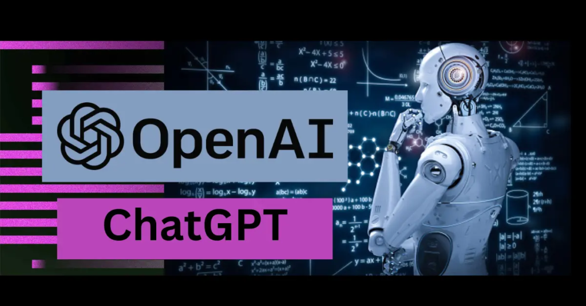

Chat Gpt...?
आज के समय में इंटरनेट की दुनिया में सबसे चर्चित और प्रचलित चीज़ है वो है Chat Gpt। हर कोई आज जानना चाहता है की क्या है Chat Gpt? कैसे काम करता हे ? इसके फायदे क्या क्या है ? क्या भविष्य में इसके कोई नुकसान भी है ? आज हम इन्ही सवालो का जवाब ढूंढेंगे एवं चाट गप्त का जड़ से विश्लेषण करेंगे !1 ) Chat Gpt क्या है ? What is chat gpt in hindi...
अंग्रेजी भाषा में Chat Gpt का फुल फॉर्म चैट जेनरेटिव प्रिट्रेंड ट्रांसफार्मर ( chat generative pre-trained transformer ) होता है। इसका निर्माण ओपन आर्टिफिशियल इंटेलिजेंस के द्वारा किया गया है जो कि एक प्रकार का चैट बोट है। आर्टिफिशियल इंटेलिजेंस की वजह से ही यह आर्टिफिशियल इंटेलिजेंस पर काम करेगा। प्राप्त जानकारी के अनुसार आप इसके द्वारा सरलता से शब्दों के प्रारूप में बात कर सकते हैं और अपने किसी भी प्रकार के सवाल का जवाब प्राप्त कर सकते हैं। इसे अगर हम एक प्रकार का सर्च इंजन समझे तो इसमें भी कोई अतिशयोक्ति नहीं होगी। अभी इसकी लॉन्चिंग हुई है। इसलिए अभी सिर्फ यह अंग्रेजी भाषा में ही इस्तेमाल करने के लिए अंतरराष्ट्रीय स्तर पर मौजूद है। हालांकि आगे बढ़ने पर इसमें अन्य भाषाओं को भी जोड़ने का प्रावधान रखा गया है। आप यहां पर जो भी सवाल लिखकर पूछते हैं, उस सवाल का जवाब चैट जीपीटी के द्वारा आपको विस्तार से प्रदान किया जाता है। इसे साल 2022 में 30 नवंबर के दिन लांच किया गया है और इसकी आधिकारिक वेबसाइट chat.openai.com है। इसके यूजर की संख्या अभी तक 2 मिलियन के आसपास पहुंच चुकी है।
2 ) Chat Gpt कैसे काम करता हे ? How does chat gpt work in hindi...
यह एक Pre-Trained Chat Generative Transformer है, जिसे पहले से ही Train किया गया है। Chat Gpt को ट्रेनिंग देने के लिए इसके Developers द्वारा पब्लिक डाटा का इस्तेमाल किया गया है, जिसके आधार पर यह चैट बोट हमारे सवालों के जवाब ढूंढ कर देता है। हालांकि यह केवल पब्लिक डाटा में से सवालों के जवाब उठाकर ज्यों का त्यों नहीं देता बल्कि उन्हें सही भाषा में तैयार (Create) करता है, उसके बाद हम तक पहुंचाता है। आपके सवालों के जवाब देने के बाद Chat Gpt Chatbot आपकी संतुष्टि का ख्याल रखता है। Chat Gpt अपने यूजर्स की प्रतिक्रिया के आधार पर उत्तर में संशोधन भी करता है ताकि यूजर को संतुष्ट किया जा सके। अगर आप Chat Gpt के किसी जवाब से संतुष्ट नहीं है तो वह उन जवाबों में लगातार संशोधन भी करता रहता है। चैट GPT ke काम करने का तरीका गूगल से बिल्कुल अलग है। जब आप गूगल से कोई भी सवाल पूछते हैं तो गूगल तुरंत इंटरनेट पर अपलोड की गई जानकारियों के डेटा बेस पर आपके सवाल का जवाब देता है। लेकिन चैट जीपीटी ऐसा नहीं करता। यह टूल इंटरनेट पर सर्च नहीं करदा बल्कि अपने भीतर फीड की गई जानकारियों (Data) के आधार पर आपके सवालों के जवाब देता है।
Chat Gpt के फायदे क्या क्या है ? What are the benefits of Chat gpt?
1) मानव वार्तालाप का अनुकरण करता है :
ChatGpt का मुख्य काम मानव के जैसे बातचीत करना है। आपने इनपुट देई हुई सवाल को या अपने आदेश को मानव जैसे भाषा में संभाषण करता है। ये एक real World संभाषन करता है। मानव की भाषा समझने के लिए इसे train किया है।
2) प्रगत GPT मॉडल के आधार पर निर्मित :
GPT-3 OpenAI द्वारा विकसित एक Autoagressive language और language producation model है। आज मार्केट में subscription के साथ ChatGpt plus ये भी उपलब्ध है। जो GPT ३ से बड़ा प्रगत है।
3) व्यापक अनुप्रयोग और लाभ :
ChatGpt versatile है। यह AI के कॉपीराइटर के समान आउटपुट लिख सकता है। Experiments से पता चला है कि यह संगीत की रचना भी कर सकता है और कथाएँ जैसे काल्पनिक कार्यों का निर्माण भी कर सकता है। ChatGPT का एक और उपयोग यह है कि यह computer program भी लिख और debug भी कर सकता है।
4) एक्सटेंशन के लिए प्लगइन्स की उपलब्धता :
ChatGPT अपनी सुविधाओं और कार्यों को बढ़ाने के लिए plugins का भी भी वापर करता है। कुछ plugins up-to-date जानकारी तक पहुँच लिए अनुमति देते हैं।
ChatGpt से नुकसान क्या है | What Are The Drawback Of ChatGpt in hindi
1) अशुद्धियाँ और अस्पष्टताएँ :
ChatGpt का एक सबसे बड़ा नुकसान है की यह कभी कभी मानव के सवाल का जबाब ठीक से नहीं देता है। कभी कभी ChatGpt से गलतिया होती है। क्योंकी यह Tool अभी तक पूरा काम नहीं करता है इस Tool को train करने का काम अभी भी चल रहा है।
2) हाल की घटनाओं का सीमित ज्ञान :
नवंबर २०२२ में launched किया गया ये Tool केवल २०२१ और उससे पहले होने वाली घटनाओं के बारे में जानकारी प्रदान कर सकता है। यह जल्द ही और अधिक हाल की घटनाओं को प्रदान करेगा। users को ध्यान रखना चाहिए की ये tool तथ्यों का सिमित ज्ञान देता है।
३) नैतिक मुद्दे और चिंताएं |
ChatGPT का एक और नुकसान यह है कि इसकी जांच की जाती है। कई शैक्षणिक संस्थानों ने इसके इस्तेमाल बंद कर दिया है। क्योंकि इसके आउटपुट मानव के विचारों के साथ प्रेरित हैं। इसीलिए कई सारे Resarchers चिंतित है।
४) ChatGpt मानव नहीं है |
ChatGpt का यह एक बड़ा नुकसान है की यह मानव नहीं है। लेकिन ये मानव की Feelings समझता है और मानव के साथ बातचीत करता है।